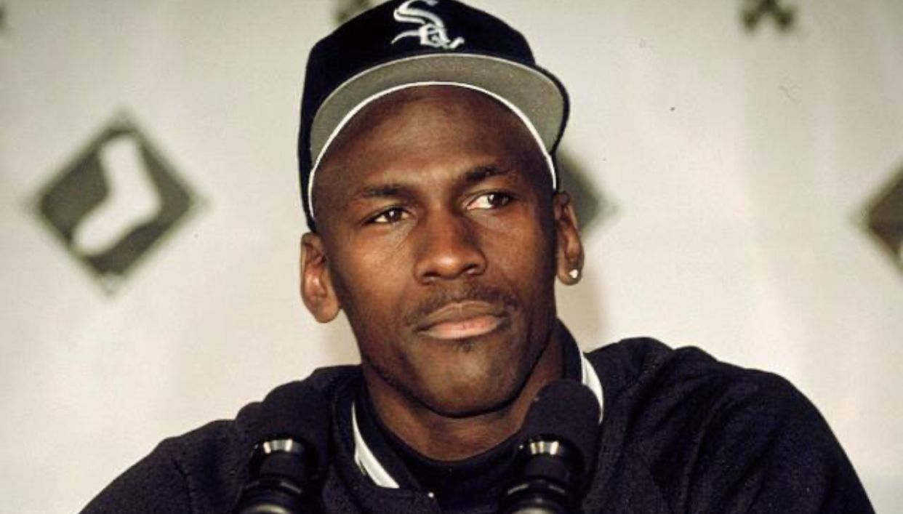

Michael Jordan doa R$ 52,3 mi a ONG para celebrar 60º aniversário.
O seis vezes campeão da NBA Michael Jordan fez uma doação de 10 milhões de dólares (cerca de R$ 52,3 milhões na cotação atual) para a fundação Make-A-Wish, uma ONG que realiza desejos de crianças com doenças graves. Michael Jordan realizou a doação para comemorar o aniversário de 60 anos, que serão completados amanhã, 17 de fevereiro.Não consigo pensar em um presente de aniversário melhor do que ver outras pessoas se juntarem a mim para apoiar a Make-A-Wish, para que todas as crianças possam experimentar a magia de realizar seu desejo".
 >Campeão da NBA é preso acusado de golpear mulher 'repetidas vezes.
O ala-armador da NBA Bryn Forbes, dispensado pelo Minnesota Timberwolves na semana passada, foi preso, na manhã dessa quarta-feira, após supostamente agredir uma mulher. De acordo com a polícia de San Antonio, a vítima alegou que foi "golpeada repetidas vezes causando dor e lesões". A suposta agressão ocorreu por volta das 5h da manhã de quarta-feira. Segundo a mulher, o casal se desentendeu durante uma saída e, quando chegaram em casa, a discussão se tornou físicaO serviço médico emergencial prestou ajuda à vítima no local e, pouco tempo depois, Forbes foi preso. De acordo com os registros policiais apurados pelo site americano "TMZ", o atleta continuava preso na tarde de quarta-feira. Bryn Forbes não foi escolhido no Draft da NBA de 2016, mas fechou contrato com o San Antonio Spurs e disputou 36 jogos na sua temporada como calouro. O ala-armador permaneceu na franquia texana até 2020, quando acertou com o Milwaukee Bucks. Na equipe de Antetokounmpo, o jogador viveu seu grande momento em 2021, quando foi campeão da liga. Depois, ainda passou pelo Denver Nuggets antes de chegar aos Wolves, de onde foi dispensado na última semana.